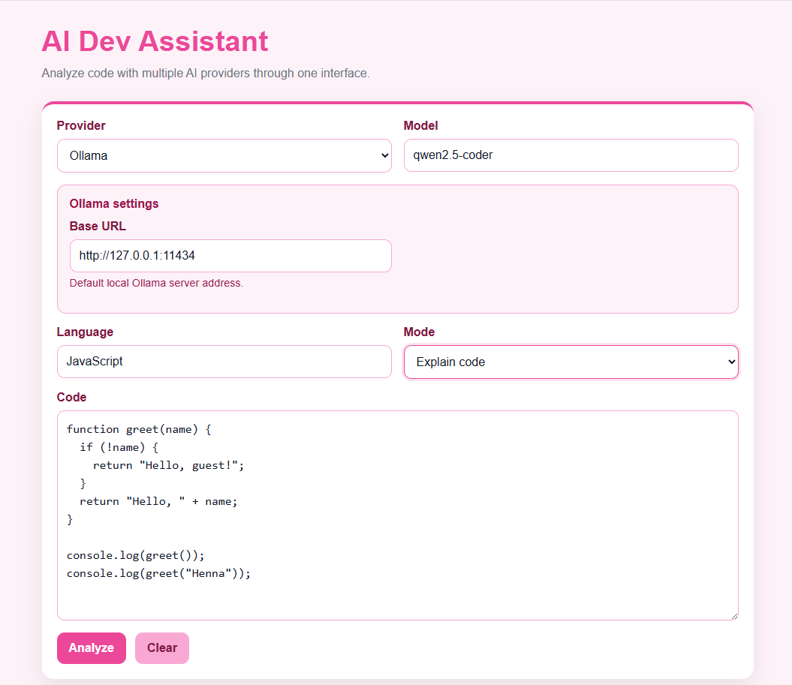
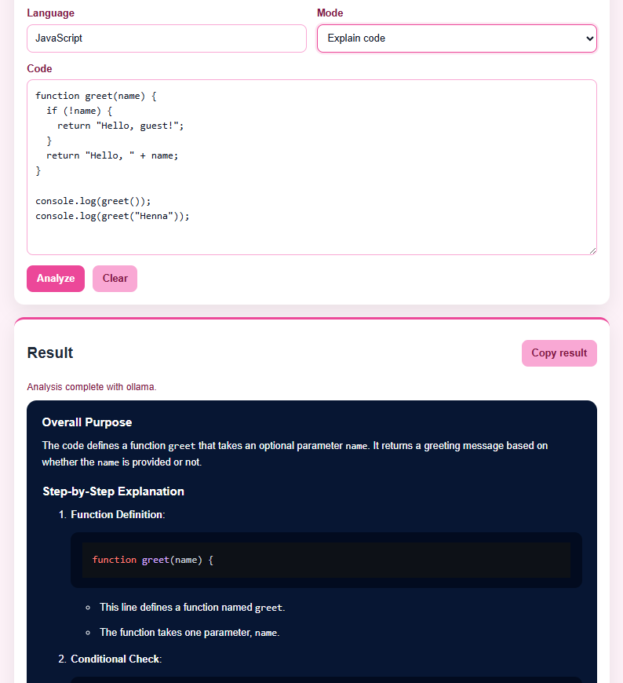
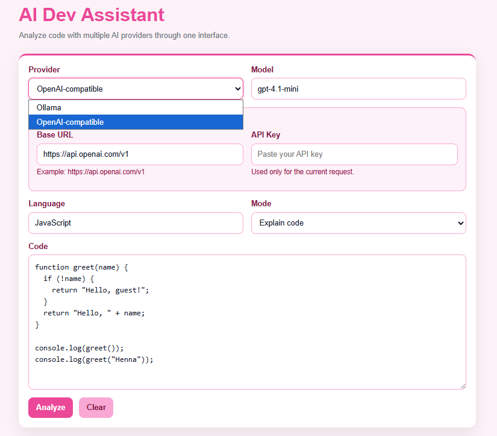
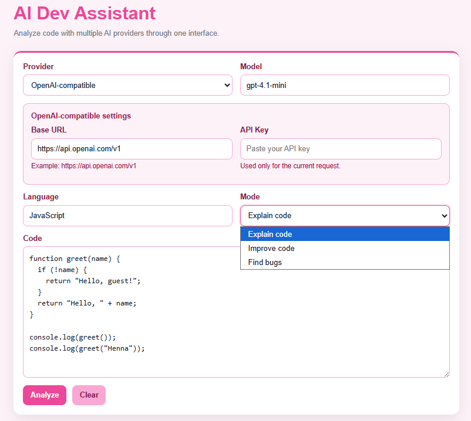

Päänäkymä (Main view)
Sovelluksen päänäkymä, jossa käyttäjä voi valita providerin, mallin, analyysityypin ja liittää analysoitavan koodin. (Värimaailmaksi valitsin pinkin, sillä se on lempivärini.)
AI Dev Assistant on moniprovider web-sovellus, jossa käyttäjä voi liittää koodia, valita analyysitilan ja saada yhdestä käyttöliittymästä selityksiä, parannusehdotuksia ja bugianalyysiä.
Rakensin projektin, jotta voisin tutkia käytännössä, miten tekoälyä voidaan käyttää osana oikeaa kehitysprosessia eikä vain yksinkertaisena chat-demona. Sovellus tukee lokaalisti ajettavaa Ollamaa ja on rakennettu laajennettavaksi myös OpenAI-yhteensopiviin rajapintoihin.
Tämän projektin idea oli rakentaa käytännöllinen työkalu kehittäjälle. Käyttäjä voi syöttää sovellukseen koodia, valita analyysin tarkoituksen ja saada AI:lta vastauksen helposti luettavassa muodossa.
Rakensin toteutuksen niin, ettei se ole sidottu vain yhteen malliin. Sovelluksen taustalla on provider-kohtainen rakenne, jonka avulla samaa käyttöliittymää voi käyttää useiden eri AI-palveluiden kanssa.
Suunnittelin ja toteutin koko ratkaisun itse. Tämä sisälsi backend-logiikan, API-integraatiot, prompttien suunnittelun, provider-kohtaisten asetusten käsittelyn, käyttöliittymän rakenteen sekä visuaalisen viimeistelyn.
Projektin aikana ratkoin myös käytännön integraatio-ongelmia, kuten yhteysasetuksia, lokaalisti ajettavan mallin käyttöä sekä käyttöliittymän toimivuutta ja selkeyttä.
Näyttökuvia käyttöliittymästä.

Sovelluksen päänäkymä, jossa käyttäjä voi valita providerin, mallin, analyysityypin ja liittää analysoitavan koodin. (Värimaailmaksi valitsin pinkin, sillä se on lempivärini.)

Esimerkki AI:n tuottamasta koodiselityksestä. Tulos renderöidään selkeästi saman käyttöliittymän sisällä. Oikealla yläpuolella myös "Copy result"-painike.

Provider-kohtaiset asetukset muuttuvat valinnan mukaan, mikä tekee käyttöliittymästä joustavan mutta silti yksinkertaisen käyttää. Valitessa OpenAI-compatible, järjestelmä kysyy Base URL-osoitetta ja API-key'ta.

Sama työkalu tukee kolmea käyttötarkoitusta: koodin selittämistä, bugien etsimistä ja parannusehdotusten tuottamista.
Projektissa yhdistyy sekä frontend- että backend-kehitys sekä AI-integraatioiden käytännön toteutus.
Tämä projekti on erillinen työ, joka ei liity koulutehtäviini. Projekti osoittaa, että osaan yhdistää käytännön ohjelmistokehityksen, AI:n hyödyntämisen, integraatiot ja käyttöliittymän yhdeksi toimivaksi kokonaisuudeksi.
Samalla se liittyy suoraan siihen suuntaan, johon haluan kehittyä: ohjelmistokehitykseen, jossa tekoäly on osa tuotetta ja kehitysprosessia.